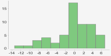

Precios de casas de ciudades
Descripción
Este proyecto consiste en generar un modelo de IA que sea capaz de predecir las medianas de precios de casas en ciudades concretas dependiendo de varias circunstancias, las cuales son:
Dominios de los atributos
| Atributo | Tipo | Rango |
|---|
Outliers y valores faltantes
| Atributo | Distribución | Outliers |
|---|
Preparación previa y modelo
Antes que nada, separamos el dataset en dos sub-datasets, uno para entrenar el modelo y otro para evaluarlo.
Para esto, se utilizó RapidMiner, una aplicación para desarrollo de modelos de IA de uso industrial.
Estos son los pasos realizados:
Y este es el resultado:
Resultados
Regresión lineal sin selección de atributos:
Como se puede ver, el primer modelo considera los atributos "INDUS" y "AGE" como poco significativos, por lo que el modelo con selección de atributos "greedy" los elimina:
Performance
| Propiedad de la performance | Valor para el modelo sin selección de atributos | Valor para el modelo con selección de atributos "greedy" |
|---|---|---|
| Squared error | 17,991 +/- 35,884 | 17,878 +/- 35,496 |
| Correlation | 0,884 | 0,885 |
| Squared correlation | 0,781 | 0,783 |
Medidas de errores de predicción
Tras evaluar ambos modelos, se obtienen estadísticas acerca de los errores que tienen al predecir datos no vistos antes:
| Modelo | Distribución del error | Notas |
|---|---|---|
| Sin selección de atributos |  | Rango de -13,384 a 6,770 |
| Con selección de atributos "greedy" | Rango de -13,353 a 6,763 |
Por un lado, no se nota una mejora clara en añadir feature selection al proceso. Ambos extremos del rango se acercaron un poco al 0, pero eso no implica que el modelo haya mejorado.
Por otro lado, se puede ver que ambos modelos fallan en, como máximo, 14000 dólares según la evaluación. Este es un nivel de error que, en un contexto donde la mayoría de casas cuestan, como mucho, 50000 dólares, puede considerarse importante.